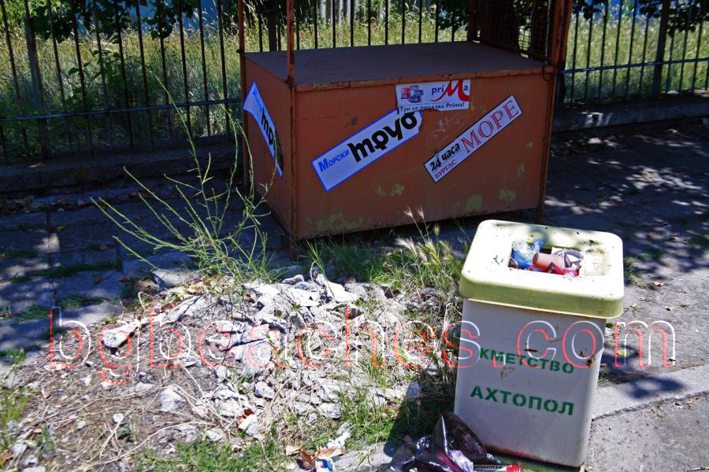

Връзката е неуместна
За тази снимка
Природната красота около Ахтопол е една от главните атракции на района. Тази снимка документира ландшафта, растителността и естествената среда, която прави това място специално. Конкретно, снимката фокусира върху trash, което е характерна особеност на Ахтопол.
За Ахтопол
Ахтопол е дестинация по българското Черноморско крайбрежие с уникален характер. Българският бряг се простира на 378 километра и предлага разнообразие от плажове, природни забележителности и културни атракции. Всяко място има своя специфична атмосфера и удобства.